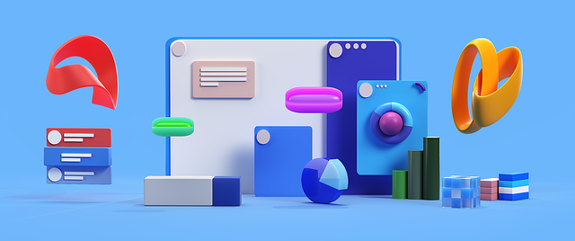

La mia toolchain leggera per progetti personali
Negli anni ho testato decine di strumenti, framework e workflow per i miei progetti personali. Ma ogni volta che la complessità cresce, la motivazione scende. Ecco perché oggi uso una toolchain essenziale, veloce e portatile.
Editor: VS Code con pochissime estensioni (Prettier, ESLint, Live Server). Leggero e immediato.
CSS: Niente framework pesanti. Uso vanilla CSS o SCSS modulare con qualche utility custom. Zero Bootstrap, zero Tailwind per progetti piccoli.
“Ogni tool in più è una distrazione potenziale. Meno cose, più focus.”
JavaScript: Vanilla quando posso, oppure Vite + Vue per cose dinamiche. Non ho più tempo per build troppo lente o configurazioni infinite.
Versionamento: Git, ma in locale. Su GitHub solo quando il progetto prende forma. Backup? Una cartella su Dropbox con symlink dal workspace.
Deployment: Netlify o GitHub Pages. Due click e online. La semplicità vince sempre sul lungo termine.
In sintesi, ho smesso di rincorrere la toolchain “perfetta”. Ora costruisco con ciò che conosco, che si avvia in 2 secondi e che non ostacola l’unica cosa che conta: fare.